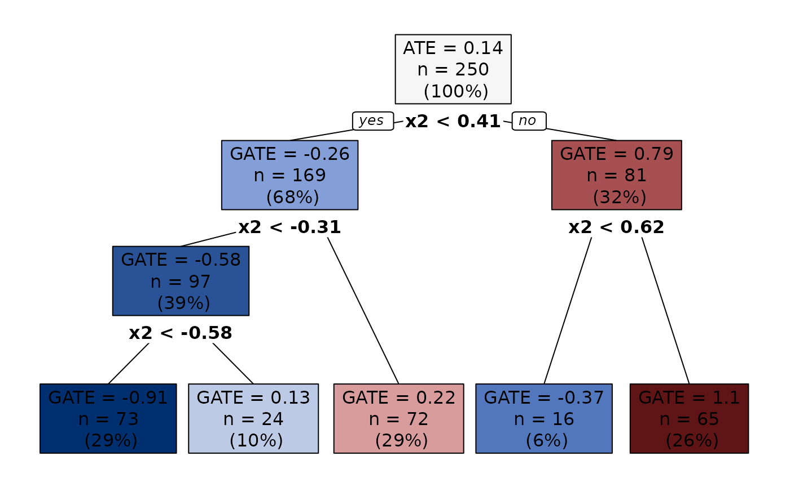

aggTrees-vignette.RmdIn this tutorial, we show how to use the aggTrees
package to discover heterogeneous subgroups in a
selection-on-observables setting.
The approach consists of three steps:
This way, we generate a sequence of groupings, one for each granularity level.
The resulting sequence is nested in the sense that subgroups formed at a given level of granularity are never broken at coarser levels. This guarantees consistency of the results across the different granularity levels, generally considered a basic requirement that every classification system should satisfy. Moreover, each grouping features an optimality property in that it ensures that the loss in explained heterogeneity resulting from aggregation is minimized.
Given the sequence of groupings, we can estimate the group average treatment effects (GATEs) as we like. The package supports two estimators, based on differences in mean outcomes between treated and control units (unbiased only in randomized experiments) and on sample averages of doubly-robust scores (unbiased also in observational studies).
The package also allows to get standard errors for the GATEs by estimating via OLS appropriate linear models. Then, under an “honesty” condition, we can use the estimated standard errors to conduct valid inference about the GATEs as usual, e.g., by constructing conventional confidence intervals.1
For illustration purposes, let us generate some data:
## Generate data.
set.seed(1986)
n <- 1000
k <- 3
X <- matrix(rnorm(n * k), ncol = k)
colnames(X) <- paste0("x", seq_len(k))
D <- rbinom(n, size = 1, prob = 0.5)
mu0 <- 0.5 * X[, 1]
mu1 <- 0.5 * X[, 1] + X[, 2]
Y <- mu0 + D * (mu1 - mu0) + rnorm(n)First, we need to estimate the CATEs. This can be achieved with any estimator we like. Here we use the causal forest estimator. To achieve valid inference about the GATEs, we split the sample into a training sample and an honest sample of equal sizes. The CATEs are estimated using only the training sample.
## Sample split.
splits <- sample_split(length(Y), training_frac = 0.5)
training_idx <- splits$training_idx
honest_idx <- splits$honest_idx
Y_tr <- Y[training_idx]
D_tr <- D[training_idx]
X_tr <- X[training_idx, ]
Y_hon <- Y[honest_idx]
D_hon <- D[honest_idx]
X_hon <- X[honest_idx, ]
## Estimate the CATEs. Use only training sample.
forest <- causal_forest(X_tr, Y_tr, D_tr)
cates <- predict(forest, X)$predictionsNow we use the build_aggtree function to construct the
sequence of groupings. This function approximates the estimated CATEs by
a decision tree using only the training sample and computes node
predictions (i.e., the GATEs) using only the honest sample.
build_aggtree allows the user to choose between two GATE
estimators:
method = "raw", the GATEs are estimated by
taking the differences between the mean outcomes of treated and control
units in each node. This is an unbiased estimator (only) in randomized
experiments;method = "aipw", the GATEs are estimated by
averaging doubly-robust scores in each node. This is an unbiased
estimator also in observational studies under particular conditions on
the construction of the scores.2
The doubly-robust scores are estimated internally using 5-fold
cross-fitting and only observations from the honest sample. Notice the
use of the is_honest argument, a logical vector denoting
which observations we allocated to the honest sample. This way,
build_aggtree knows which observations must be used to
construct the tree and compute node predictions.
## Construct the sequence. Use doubly-robust scores.
groupings <- build_aggtree(Y, D, X, method = "aipw",
cates = cates, is_honest = 1:length(Y) %in% honest_idx)
## Print.
print(groupings)
#> Honest estimates: TRUE
#> n= 500
#>
#> node), split, n, deviance, yval
#> * denotes terminal node
#>
#> 1) root 500 321.018500 -0.11661130
#> 2) x2< -0.1879849 221 12.823010 -1.30713100
#> 4) x2< -0.383392 190 4.463077 -1.45418600 *
#> 5) x2>=-0.383392 31 1.128113 -0.24711230 *
#> 3) x2>=-0.1879849 279 68.150780 0.65742310
#> 6) x2< 0.6613496 160 4.756562 0.05290272 *
#> 7) x2>=0.6613496 119 3.632301 1.45114500 *
## Plot.
plot(groupings) # Try also setting 'sequence = TRUE'.
Now that we have a whole sequence of optimal groupings, we can pick
the grouping associated with our preferred granularity level and call
the inference_aggtree function. This function does the
following:
method we used when we called
build_aggtree;3
To report the results, we can print nice LATEX tables.
## Inference with 4 groups.
results <- inference_aggtree(groupings, n_groups = 4)
## LATEX.
print(results, table = "diff")
#> \begingroup
#> \setlength{\tabcolsep}{8pt}
#> \renewcommand{\arraystretch}{1.2}
#> \begin{table}[b!]
#> \centering
#> \begin{adjustbox}{width = 1\textwidth}
#> \begin{tabular}{@{\extracolsep{5pt}}l c c c c}
#> \\[-1.8ex]\hline
#> \hline \\[-1.8ex]
#>
#> & \textit{Leaf 1} & \textit{Leaf 2} & \textit{Leaf 3} & \textit{Leaf 4} \\
#> \addlinespace[2pt]
#> \hline \\[-1.8ex]
#>
#> \multirow{3}{*}{GATEs} & -1.454 & -0.247 & 0.053 & 1.451 \\
#> & [-1.781, -1.127] & [-1.013, 0.519] & [-0.249, 0.355] & [ 1.086, 1.816] \\
#> & \{NA, NA\} & \{NA, NA\} & \{NA, NA\} & \{NA, NA\} \\
#>
#> \addlinespace[2pt]
#> \hline \\[-1.8ex]
#>
#> \textit{Leaf 1} & NA & NA & NA & NA \\
#> & (NA) & (NA) & (NA) & (NA) \\
#> \textit{Leaf 2} & 1.21 & NA & NA & NA \\
#> & (0.010) & ( NA) & ( NA) & (NA) \\
#> \textit{Leaf 3} & 1.51 & 0.30 & NA & NA \\
#> & (0.000) & (0.476) & ( NA) & (NA) \\
#> \textit{Leaf 4} & 2.91 & 1.70 & 1.40 & NA \\
#> & (0.000) & (0.000) & (0.000) & (NA) \\
#>
#> \addlinespace[3pt]
#> \\[-1.8ex]\hline
#> \hline \\[-1.8ex]
#> \end{tabular}
#> \end{adjustbox}
#> \caption{Point estimates and $95\%$ confidence intervals for the GATEs based on asymptotic normality (in square brackets) and on the percentiles of the bootstrap distribution (in curly braces). Leaves are sorted in increasing order of the GATEs. Additionally, the differences in the GATEs across all pairs of leaves are displayed. $p$-values to test the null hypothesis that a single difference is zero are adjusted using Holm's procedure and reported in parenthesis under each point estimate.}
#> \label{table:differences.gates}
#> \end{table}
#> \endgroup
print(results, table = "avg_char")
#> \begingroup
#> \setlength{\tabcolsep}{8pt}
#> \renewcommand{\arraystretch}{1.1}
#> \begin{table}[b!]
#> \centering
#> \begin{adjustbox}{width = 1\textwidth}
#> \begin{tabular}{@{\extracolsep{5pt}}l c c c c c c c c }
#> \\[-1.8ex]\hline
#> \hline \\[-1.8ex]
#> & \multicolumn{2}{c}{\textit{Leaf 1}} & \multicolumn{2}{c}{\textit{Leaf 2}} & \multicolumn{2}{c}{\textit{Leaf 3}} & \multicolumn{2}{c}{\textit{Leaf 4}} \\\cmidrule{2-3} \cmidrule{4-5} \cmidrule{6-7} \cmidrule{8-9}
#> & Mean & (S.E.) & Mean & (S.E.) & Mean & (S.E.) & Mean & (S.E.) \\
#> \addlinespace[2pt]
#> \hline \\[-1.8ex]
#>
#> \texttt{x1} & -0.018 & (0.073) & -0.041 & (0.188) & 0.001 & (0.078) & -0.029 & (0.082) \\
#> \texttt{x2} & -1.056 & (0.044) & -0.299 & (0.012) & 0.207 & (0.018) & 1.286 & (0.046) \\
#> \texttt{x3} & 0.043 & (0.075) & -0.136 & (0.198) & -0.156 & (0.079) & 0.050 & (0.085) \\
#>
#> \addlinespace[3pt]
#> \\[-1.8ex]\hline
#> \hline \\[-1.8ex]
#> \end{tabular}
#> \end{adjustbox}
#> \caption{Average characteristics of units in each leaf, obtained by regressing each covariate on a set of dummies denoting leaf membership using only the honest sample. Standard errors are estimated via the Eicker-Huber-White estimator. Leaves are sorted in increasing order of the GATEs.}
#> \label{table:average.characteristics.leaves}
#> \end{table}
#> \endgroupCheck the inference vignette for more details.↩︎
See footnote 1.↩︎
See footnote 1.↩︎